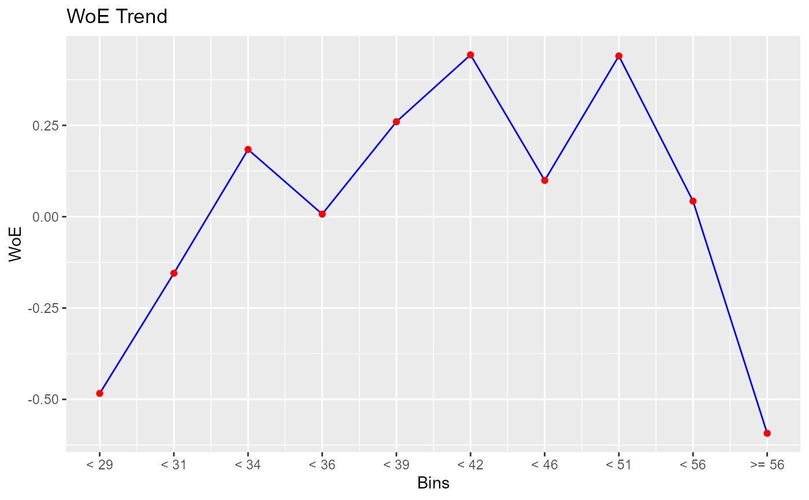

Bin continuous data manually.
Usage
rbin_manual(
data = NULL,
response = NULL,
predictor = NULL,
cut_points = NULL,
include_na = TRUE
)
# S3 method for class 'rbin_manual'
plot(x, print_plot = TRUE, ...)Arguments
- data
A
data.frameortibble.- response
Bare column name, character name, or variable holding a character name in
data. A binary variable coded as 0/1, a logical variable, or a two-level factor/character. For a two-level factor the first level is treated as 0 and the second as 1. A character response is sorted in byte (C-locale) order: uppercase before lowercase, ASCII before accented characters; use a factor to choose the event level. The second value is the event. Rows with a missing response are dropped with a warning.- predictor
Bare column name, character name, or variable holding a character name in
data. A numeric predictor variable.- cut_points
Cut points for binning.
- include_na
logical; if
TRUE, a separate bin is created for missing values.- x
An object of class
rbin_manual.- print_plot
logical; if
TRUE, prints the plot else returns a plot object.- ...
further arguments passed to or from other methods.
Value
A list of class rbin_manual with the following elements:
bins, a data.frame with one row per interval (including
empty intervals) and a final row for missing values when present;
method; vars; lower_cut; and upper_cut.
Details
Cut points are open upper bounds: intervals are left closed and
right open, [lower, upper). Supply nine cut points for ten bins;
the last bin has no upper bound. For an integer predictor, a cut at 37
includes integers through 36. For continuous data, that cut includes every
value below 37, including 36.5; choose the continuous boundary directly.
Examples
bins <- rbin_manual(mbank, y, age, c(29, 31, 34, 36, 39, 42, 46, 51, 56))
bins
#> Binning Summary
#> ---------------------------
#> Method Manual
#> Response y
#> Predictor age
#> Bins 10
#> Count 4521
#> Goods 517
#> Bads 4004
#> Entropy 0.5
#> Information Value 0.12
#>
#>
#> cut_point bin_count good bad woe iv entropy
#> 1 < 29 410 71 339 -0.483686036 2.547353e-02 0.6649069
#> 2 < 31 313 41 272 -0.154776266 1.760055e-03 0.5601482
#> 3 < 34 567 55 512 0.183985174 3.953685e-03 0.4594187
#> 4 < 36 396 45 351 0.007117468 4.425063e-06 0.5107878
#> 5 < 39 519 47 472 0.259825118 7.008270e-03 0.4383322
#> 6 < 42 431 33 398 0.442938178 1.575567e-02 0.3899626
#> 7 < 46 449 47 402 0.099298221 9.423907e-04 0.4836486
#> 8 < 51 521 40 481 0.439981550 1.881380e-02 0.3907140
#> 9 < 56 445 49 396 0.042587647 1.756117e-04 0.5002548
#> 10 >= 56 470 89 381 -0.592843261 4.564428e-02 0.7001343
# plot
plot(bins)
